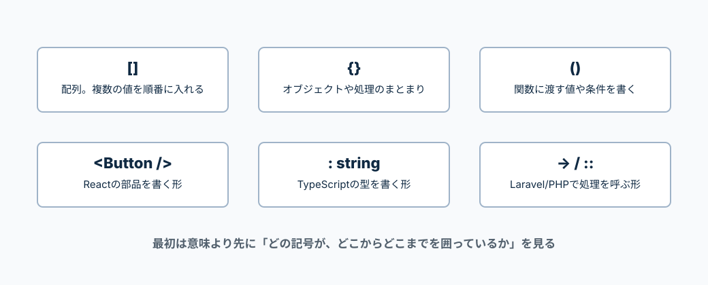

初学者がまず見るべき「コードの形」をまとめる。
意味を覚える前に、どこからどこまでが1つのまとまりかを見る。
コードは英単語だけではなく、記号でまとまりを作る。
配列は[]、オブジェクトは{}、関数に渡す値は()、Reactの部品は<Component />の形で読む。

ReactやAPI通信を書く前に、この形を見慣れる。
['仕事', '勉強']
[] は配列
複数の値を順番に入れる。0番目、1番目のように番号で取る。
{ id: 1, title: 'Todo' }
{} はオブジェクト
名前付きの情報をまとめる。todo.titleのように名前で取る。
createTodo('買い物')
() は渡す値
関数に渡す値を書く場所。ここでは'買い物'を渡している。
() => { ... }
=> はアロー関数
左で値を受け取り、右で処理を書く。
const title = 'Todo';
; は文の終わり
この1行の処理はここで終わり、という目印。
todo.title
. は中身を取る
todoの中にあるtitleを取る。
関数の丸括弧に入っている名前は「引数」。
引数は勝手に生まれるのではなく、その関数を呼ぶ側が渡している。
| createTodo(title) |
自分でcreateTodoを呼ぶ時にtitleを渡す。 例: createTodo('買い物') |
|---|---|
| onChange={(e) => ...} |
inputの値が変わった時、Reactがeを渡す。 eの中に、どのinputで何が起きたかが入っている。 |
| todos.map((todo) => ...) |
mapが配列を1件ずつ取り出してtodoを渡す。 todosが3件なら、この関数も3回呼ばれる。 |
| setTodos((prevTodos) => ...) |
Reactが直前のtodosをprevTodosとして渡す。 前のstateを元に次のstateを作る時に使う。 |
| store(StoreTodoRequest $request) |
Laravelがリクエスト情報を$requestとして渡す。 フォームリクエストなら、バリデーション済みの値を取り出せる。 |
| show(Todo $todo) |
LaravelがURLのidからTodoを探して$todoとして渡す。 これはルートモデルバインディングという仕組み。 |
ReactはHTMLに似た見た目だが、JavaScriptの値を混ぜられる。
<Header />
部品を表示する
Headerコンポーネントを画面に出す。
<Button title="登録" />
propsを渡す
Buttonへtitleという値を渡している。
{title}
{} はJSを書く場所
JSXの中でJavaScriptの値を表示する。
{todos.map(...)}
一覧表示
配列の中身を1件ずつ画面に出す。
className="button"
classではなくclassName
ReactでCSS classを付ける時の書き方。
<> ... </>
空のタグ
余計なHTMLを増やさず、複数の要素をまとめる。
TypeScriptは、JavaScriptの値に「入っていい形」を書く。
const title: string
: は型を書く
titleには文字列が入る、という意味。
Todo[]
[] は配列型
Todoが複数入った配列という意味。
type Todo = { ... }
型の名前を作る
Todoという形を作り、何度も使えるようにする。
string | null
| は または
文字列かnullのどちらか、という意味。
disabled?: boolean
? は省略できる
disabledは渡しても渡さなくてもよい。
Promise<Todo>
<> は中身の型
非同期処理の結果としてTodoが返る、という意味。
LaravelはPHPなので、JavaScriptとは違う記号が出る。
$todo
$ は変数
PHPの変数は必ず$から始まる。
->create()
-> は中の処理を呼ぶ
オブジェクトのメソッドやプロパティを呼ぶ。
Route::get()
:: はクラスから呼ぶ
Routeクラスのgetメソッドを呼んでいる。
['title' => 'required']
=> は対応
titleにはrequiredルールを対応させている。
use App\Models\Todo;
use は読み込み
別の場所にあるクラスをこのファイルで使えるようにする。
public function index()
処理の名前
indexという処理を作っている。
CSSは、どの要素に、どんな見た目を当てるかを書く。
.button
. はclass
class名がbuttonの要素に当てる。
{ color: red; }
{} の中に見た目を書く
どの見た目を変えるかをまとめる。
color: red;
: は設定、; は終わり
colorにredを設定して、この行を終える。